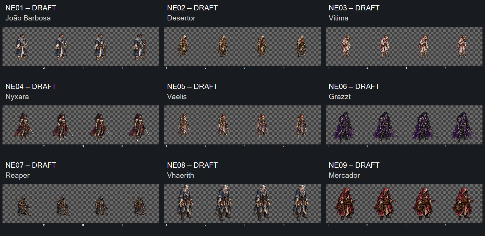
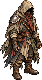
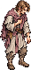
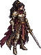
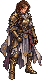
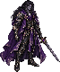
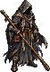
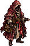

Uma revisão conjunta: João, desertor, vítima, Nyxara, Vaelis, Graz’zt, Reaper, Vhaerith e mercador. Quatro poses por fonte em uma única linha. As prévias preservam proporção, sem reposicionar ou normalizar os recortes.8FPS é velocidade de inspeção; os ciclos repetem por padrão.
Manifesto · Medições e hashes · Prompts usados · Entrega local para Claude · Checagem dos controles
NE06 Graz’zt retido: a espada ainda toca divisões em v03 após três tentativas. Seus recortes servem para diagnóstico, podem conter trecho vizinho e não estão prontos para admissão. Outras oito sequências não têm alfa≥16 nas faixas externas de4px. Folgas, opacidade e continuidade fina continuam pendentes de preparação e revisão.

Prévia derivada do contorno alfa≥16, sem alterar fontes.







Checkpoint visual concluído em16/10/2026: direção das nove revisões aceita pelo dono. NE06 permanece retido tecnicamente. Implementação com Claude; sem envio automático a outro chat. Fontes têm dimensões diferentes; usar coordenadas exatas de inspection.json. Nunca impor512px ou esticar células retangulares.
Controles verificados em DOM offline; render real do navegador e animação em jogo não verificados. Nenhum playtest realizado. Base do contorno0–1px é evidência técnica limitada, não prova fluidez.